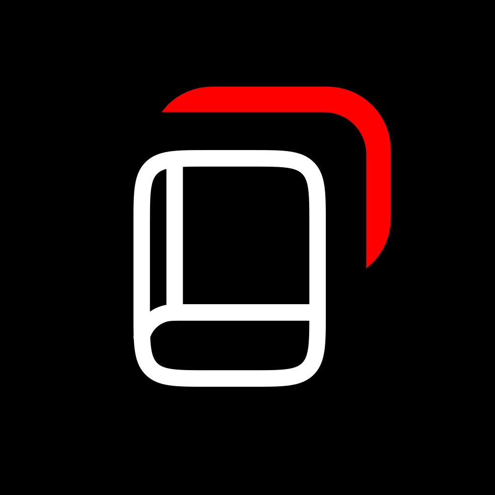

JournalUI - Полностью переписанный сайт Journal (ITStep). Предоставляется в открытом доступе и не требующий какой-либо оплаты для получения доступа. Проект был разработан в первую очередь в целях улучшения визуализацльной составляющей оригинального сайта